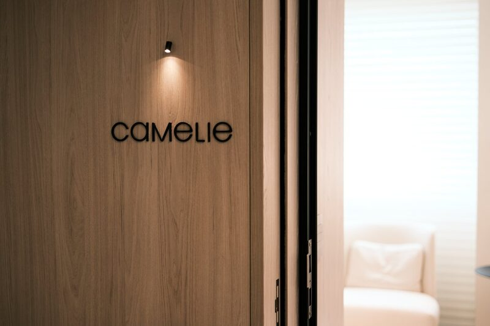
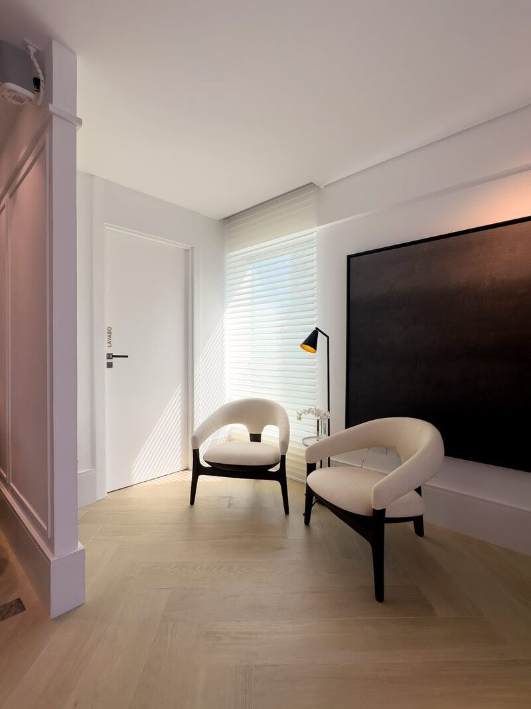
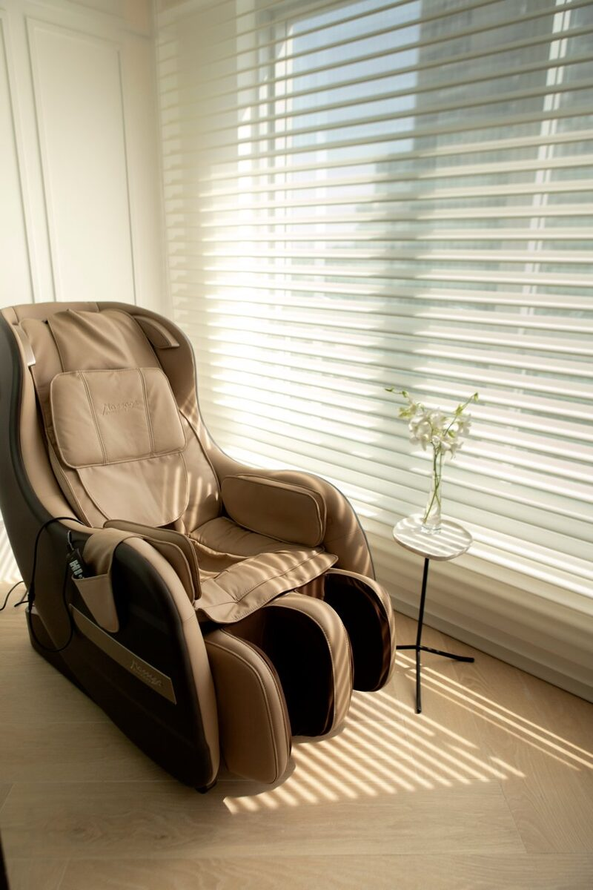
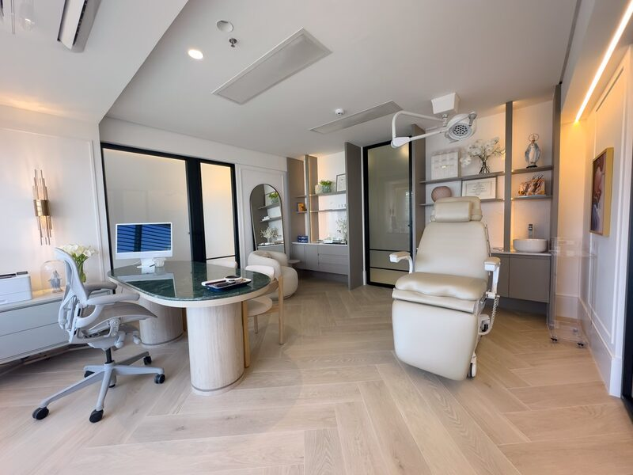

Rugas de expressão mais suaves, resultado natural e acompanhamento dermatológico em cada etapa.
Agendar minha avaliação →A toxina botulínica relaxa temporariamente os músculos responsáveis pelas rugas de expressão. Linhas na testa, entre as sobrancelhas e ao redor dos olhos ficam mais suaves — sem alterar a naturalidade do rosto.
Na Camelie, a aplicação é sempre individualizada. A dermatologista avalia a musculatura de cada paciente, define os pontos com precisão e trabalha com doses adequadas para um resultado equilibrado.
"Você parece descansada, não paralisada."
A aplicação é feita com agulhas ultrafinas em pontos estratégicos da face. O procedimento dura cerca de 20 a 30 minutos e não exige anestesia — a maioria das pacientes tolera bem. Se necessário, usamos pomada anestésica para maior conforto.
Os primeiros efeitos aparecem entre 3 e 7 dias, com resultado completo em torno de 15 dias. A duração média é de 3 a 5 meses, variando conforme o metabolismo e os hábitos de cada pessoa.
Nos primeiros dias, é possível notar leve vermelhidão ou pequenos hematomas nos pontos de aplicação — são passageiros. Uma sensação temporária de peso na região tratada também é normal.
A toxina botulínica não elimina rugas estáticas — aquelas que já existem com o rosto em repouso. Para essas, outros tratamentos podem ser indicados em conjunto. A avaliação médica define o que faz sentido para cada caso.
Nossas dermatologistas aplicam com técnica e critério, conhecem os limites do procedimento e não prometem o que ele não entrega. Cada aplicação leva em conta o seu rosto, os seus objetivos e o que é realmente indicado.
Se você nunca fez, a consulta vai esclarecer tudo — sem compromisso de fazer no mesmo dia.
Agendar minha avaliação →



O desconforto é mínimo. A maioria das pacientes compara a uma picadinha leve. Se necessário, usamos pomada anestésica.
Sim, desde que haja indicação médica e disponibilidade na agenda.
Não. Nossa abordagem prioriza naturalidade. O objetivo é suavizar, não paralisar.
Gestantes, lactantes e pessoas com doenças neuromusculares não devem fazer. A avaliação médica identifica qualquer restrição.
Na consulta, avaliamos o que a sua pele precisa e definimos juntos o melhor caminho. Sem compromisso de fazer nada no mesmo dia.
Agendar minha consulta →